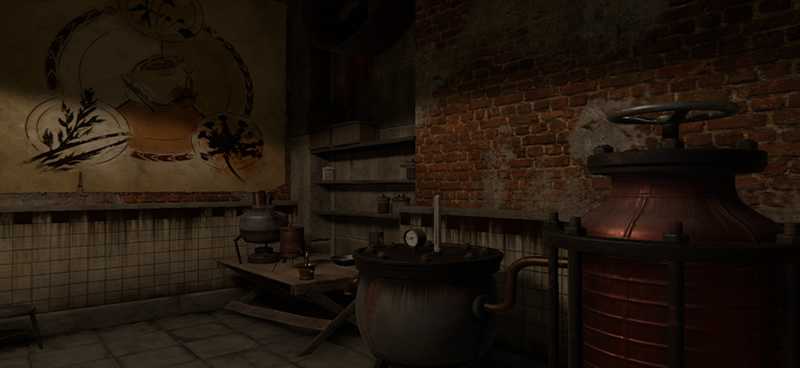
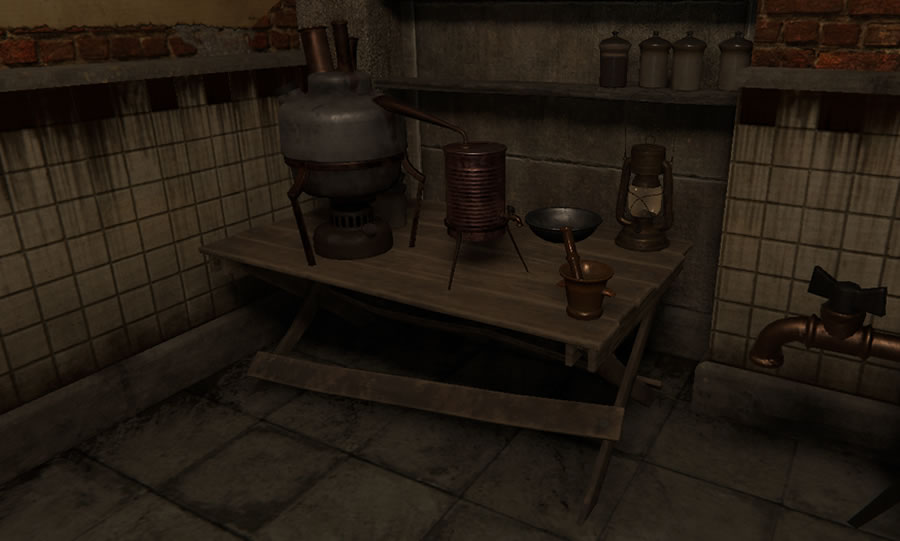
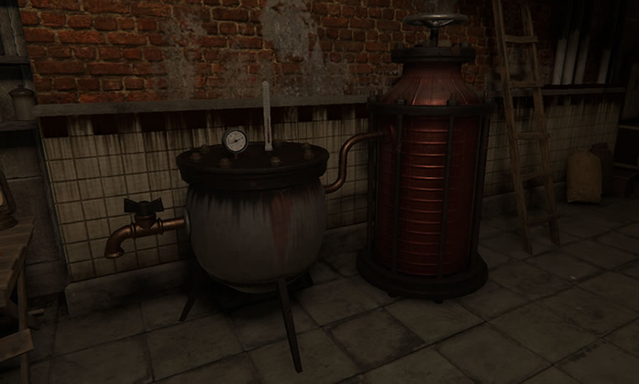

Receitas
Bem-vindo ao nosso guia de receitas!
Aqui falaremos sobre os vários tipos de "poções" que temos no jogo e como cria-las. Começando das mais simples, as infusões, depois antibióticos caseiros, e os misteriosos analgésicos!

DICA: Caso tenha dúvidas de onde conseguir ervas para produzir as poções, de uma olhada no nosso "mapa útil" clicando AQUI.
ATENÇÃO: Para produzir Infusões você irá precisar do "Alambique Menor", essa maquina pode ser consertada utilizando 1x Mola e 1x Sucata Metálica dentro do seu covil, a partir do dia 2.
Já os Antibióticos e Analgésicos são feitos no "Alambique Maior" que fica ao lado do menor, ele também pode ser consertado a partir do dia 2 utilizando 1x Sucata Metálica e 1x Caixa de Ferramentas, porem no dia 4, Palitinho irá lhe ajudar a conseguir esses itens.

